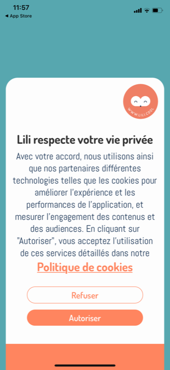
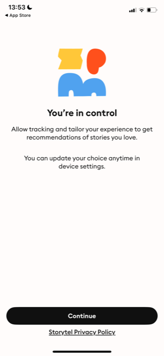
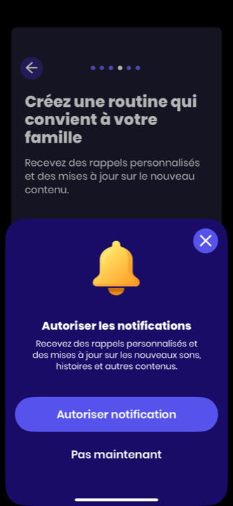
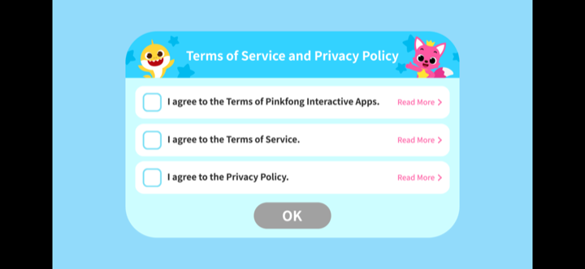

Mission Kidsono · Consentement · L'écran
L'écran de consentement : quoi demander, comment le designer, comment le placer tôt
On part sur un seul écran de consentement, placé tôt (pour capter la data d'activation). Ce rapport couvre trois choses : ce qu'on demande, les bonnes pratiques de design (avec exemples), et l'analyse du placement précoce (comment limiter la friction). Pas d'ATT (Made for Kids), pas de gate dédié (le contexte premier-lancement suffit).
Confiance · Solide best practices documentées + écrans benchmark · Observé chiffres d'opt-in
Avertissement · le wording final est à valider par l'avocat
1 · Ce qu'on demande (le contenu)
Sûr, d'après votre politique de confidentialité. Le consentement porte sur la mesure d'usage comportementale.
À mettre (sûr)
- L'objet : la mesure de l'usage (ce qui est écouté, la navigation) rattachée à un identifiant, pour analyser l'activation et améliorer les recommandations.
- Accepter / Refuser à égalité (pas de bouton refus minimisé).
- « Ça n'empêche pas d'écouter » (le refus ne bloque rien : consentement libre).
- Lien vers la politique de confidentialité.
- Réversible (modifiable dans les réglages).
- Ton « parents » : l'écran s'adresse au parent qui décide.
Doutes (à faire préciser CTO/avocat)
- AppsFlyer actif ? Si oui, couvrir l'attribution et le nommer (absent de la policy aujourd'hui).
- Granularité : un seul consentement « mesure d'usage », ou 2 cases (analyse / attribution) ?
- Base légale : la policy dit « intérêt légitime » ; il faut la basculer sur « consentement » et le refléter.
- Wording exact : à valider par l'avocat (il pilote la conformité).
2 · Bonnes pratiques de design (et exemples)
Ce que disent les références du domaine, et ce qu'on voit dans le benchmark.
À faire
- Consentement « en couche » : un message court et clair, le détail derrière un lien (politique). Pas de mur de texte. Solide
- 2-3 phrases max, langage simple, zéro jargon juridique.
- Boutons Accepter / Refuser identiques (même taille, même poids). Pas de case pré-cochée.
- Écran plein ou feuille généreuse aligné à votre DA (les pleins écrans convertissent mieux que les petits bandeaux), pas un bandeau cookie générique.
- Dire précisément à quoi servent les données (le bénéfice concret).
À éviter
- Le bandeau cookie web anxiogène transposé tel quel.
- Le refus caché (petit lien gris) ou la case pré-cochée : dark pattern, interdit, et pire sur une app enfants.
- Le jargon (« traceurs », « finalités », « responsable de traitement ») en façade.
- Conditionner l'usage de l'app à l'acceptation.
Exemples du benchmark (le plus abouti chez nous = Lili) :

Lili
CMP maison
La meilleure réf du corpus. Titre clair « Lili respecte votre vie privée », message court, lien Politique, Refuser / Autoriser présents. À corriger : « Autoriser » est plus saillant que « Refuser », à mettre à égalité.

Storytel
Framing bénéfice
Le bon ton. « You're in control », orienté bénéfice (« tailor your experience »), rassurant (« vous pouvez changer d'avis »). Exactement le framing à reprendre.

Aumio
Contexte avant la demande
Le contexte d'abord. Un écran qui explique le bénéfice avant de demander. Même logique à appliquer au consentement.

Pinkfong
Variante à cases
Cases à cocher granulaires. Trop lourd pour nous (3 cases + Read More), à ne reprendre que si l'avocat impose le granulaire.
3 · Le placer tôt sans tuer l'opt-in (l'analyse)
C'est le vrai arbitrage de ton placement précoce.
La tension à connaître
- La best practice générale dit l'inverse de ton choix [Solide] : les meilleurs taux d'opt-in viennent quand on demande après avoir montré de la valeur (moment d'engagement), pas au tout début. Demander tôt = opt-in plus bas.
- Mais toi tu veux la data d'activation sur l'onboarding (sinon pas de ratios). Donc tôt = assumé. On compense par le framing.
- Ordre de grandeur observé : un écran bien « primé » (contexte + bénéfice) peut monter à ~65% d'opt-in, contre ~15-37% pour un prompt brut. [Observé] Le soin apporté à l'écran compte plus que le moment.
Les leviers anti-friction (à appliquer à l'écran)
- Ne pas le mettre en écran 1 nu : juste après le splash/accroche, pour un minimum de contexte de marque.
- Framing bénéfice, pas juridique : « pour vous recommander les bonnes histoires et améliorer l'app » plutôt que « nous utilisons des traceurs ». Le « pourquoi » avant le « quoi ».
- Court, lisible en 5 secondes. Le détail derrière le lien.
- Rassurer : « sans pub, vos données ne sont pas vendues », « vous pouvez changer d'avis ». (cohérent avec votre engagement « pas de régie pub »).
- Refus sans punition : on continue normalement. Ça réduit l'anxiété et c'est obligatoire.
- Habillage DA Kidsono (crème, ton parent), pas un bandeau système froid.
4 · À quoi ça ressemble (proposition)
La structure recommandée, à habiller par Claude Design et à valider par l'avocat pour le wording.
★ Pour les parents
On aimerait recommander les bonnes histoires à votre enfant
Pour ça, on mesure ce qui est écouté et comment l'app est utilisée. C'est pour améliorer Kidsono, rien d'autre : pas de pub, vos données ne sont jamais vendues.
Notre politique de confidentialité
Pourquoi cette structure
- Bandeau « Pour les parents » = matérialise que c'est le parent qui décide (notre alternative au gate dédié).
- Titre orienté bénéfice enfant (« recommander les bonnes histoires ») = le framing qui réduit la friction.
- 1 phrase sur ce qu'on mesure + le « pas de pub, jamais vendu » qui rassure.
- Refus et Accepter à égalité (« Non merci » n'est pas un lien gris caché).
- Pied : ne bloque pas + réversible.
- Wording à faire valider par l'avocat (notamment si AppsFlyer doit être nommé).
L'avis
Force : un écran clair, court, orienté bénéfice et habillé « parents » coche la conformité (choix libre, refus à égalité, transparence) ET limite la casse sur l'opt-in malgré le placement précoce.
Risques : placer tôt fait mécaniquement baisser l'opt-in (donc une partie des users sera en « refus » et non trackée). C'est le prix de la data d'activation complète. Et le wording dépend de la base légale que l'avocat doit figer.
Position vs standard : le framing « bénéfice + parent + rassurance » est exactement la pratique des apps qui réussissent leur opt-in. Le placement précoce est contrarian (le standard préfère après la valeur), assumé pour la data.
Synthèse conseil, wording à valider par l'avocat. Captures du benchmark lues en pleine résolution (Lili = meilleure CMP du corpus). Sources : Usercentrics, best practices consent mobile · Adjust, opt-in design · Appcues, permission priming · Secure Privacy, GDPR mobile 2026.